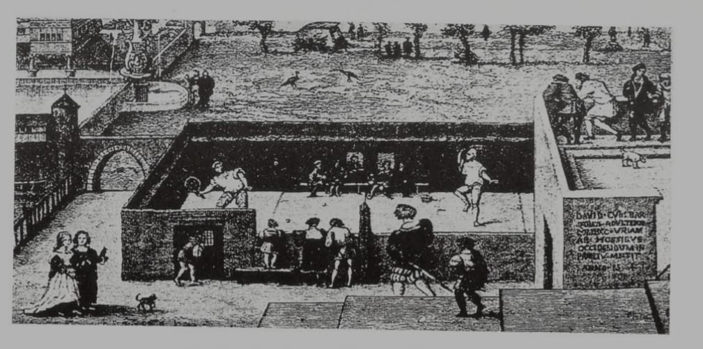

O jeu de paume surgiu na França como um jogo ao ar livre disputado com as mãos. No século 14, começaram a ser construídas quadras fechadas. Este jogo era popular e envolvia apostas, o que levou o rei francês Luís IX a proibi-lo em 1369 e novamente em 1397, alegando que distraía as pessoas de suas responsabilidades.
Na Inglaterra, o jogo chegou no século 14, supostamente trazido por cavaleiros franceses, mas foi proibido em 1388 para incentivar a prática do arco e flecha. A Holanda também proibiu o jogo em 1401.
Apesar das proibições, a realeza adotou o esporte. Na França, quadras cobertas surgiram em 1368, e por volta de 1600 havia cerca de 2 mil quadras ao ar livre. O jogo foi mencionado em poemas e relatos históricos, como o de Mademoiselle Margot, que jogava forehand e backhand.
Na Inglaterra, a aristocracia jogava tênis em locais fechados, o que levou ao termo "tênis real". O esporte era popular entre os nobres porque evitava contato físico. As partidas eram disputadas em corredores cobertos, e os pontos eram contados conforme a bola era atirada nas paredes. Para proteger as mãos, os jogadores começaram a usar luvas e depois raquetes de madeira, surgindo modelos desde o século 16.
Luís XII, Francisco I e Henrique II da França construíram muitas quadras de tênis, e Henrique VIII da Inglaterra, um entusiasta do jogo, construiu uma quadra em seu palácio, em Hampton Court. O termo "serviço" surgiu porque a realeza achava indigno lançar a bola e pedia aos serviçais para fazê-lo.
Nos Estados Unidos, o jogo, chamado de "court tennis", foi documentado em um comunicado de 1659, proibindo sua prática no Dia de Orações. O primeiro livro sobre tênis, "Trattato del Giuoco della Palla", foi publicado em 1555 pelo italiano Antonio Scaino da Salo. As regras do tênis foram compiladas e publicadas pela primeira vez em 1592, revisadas em 1632, marcando o nascimento do tênis moderno.